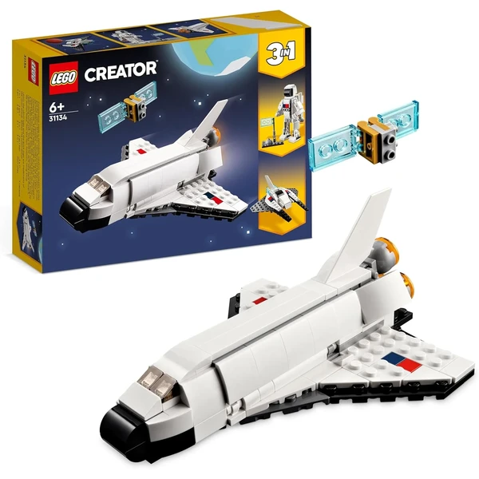

👶 9 años
LEGO Creator Lanzadera Espacial
Un set 3 en 1 que se construye como lanzadera espacial y se transforma en una figura de astronauta articulada o en una nave espacial. Incluye un satélite extraíble dentro de la escotilla.
⭐
¿Por qué nos gusta?
- ✔Tres modelos distintos con las mismas piezas.
- ✔Astronauta con jetpack y brazos articulados.
- ✔App LEGO Builder para construir en 3D.
💬
Lo que más destacan las familias
Muchos padres coinciden en que la posibilidad de construir tres modelos distintos alarga mucho la vida útil del set. La transformación en astronauta es la que más suele sorprender.